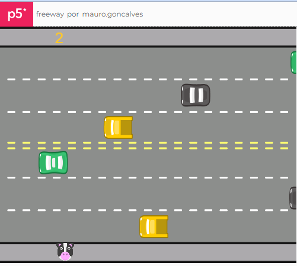
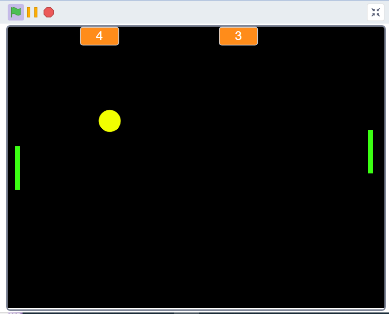

Meus Projetos

Histórico Colégio Agrícola
Em 2003 comemorando os 50 anos do Colégio Agrícola Arlindo Ribeiro

Jogo Freeway
Versão do jogo Freeway feita em JavaScript usando o p5Js editor

Jogo Pong
O pong foi o primeiro jogo comercialmente bem-sucedido e ajudou a estabelecer a indústria de jogos eletrônicos.